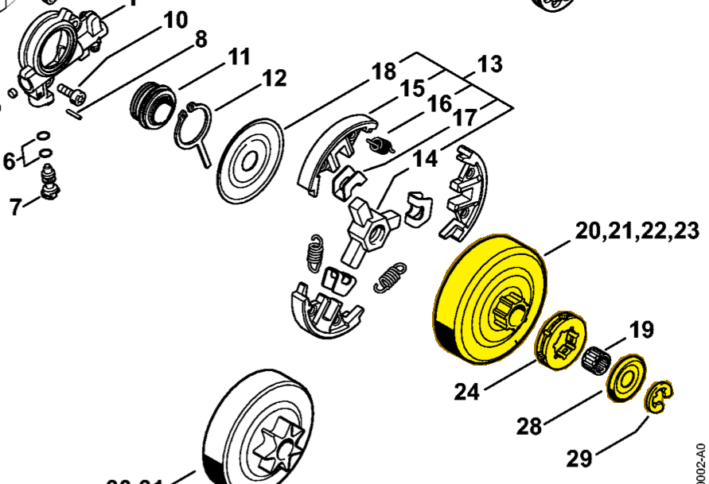

Rim sprocket kit 0.325" 7T
1141 007 1002
MS 261 — rim sprocket kit
0.325-inch pitch; 7 teeth. Includes rim sprocket 0000 642 1236 (item 24), washer 0000 958 1022 (item 28) and E-clip 9460 624 0801 (item 29).
Item 20 Qty listed: 1

MS 261 C-M spare-parts list, 10/02/2023. Drawing p. 10; parts table p. 11.
Suggest a correctionGitHub · sign-in required